# CTFshow 36D 杯 wp
# 1. 神光
下载完直接运行
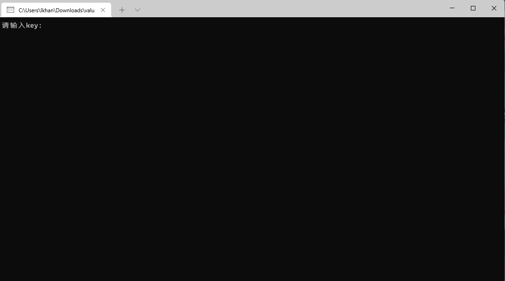
随意输入字符串之后
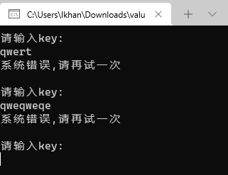
发现是一个循环，于是直接进入 IDA pro 查看
由于有 key 的输出，所以直接查找字符串 key 从而进入 main 函数
逻辑很简单
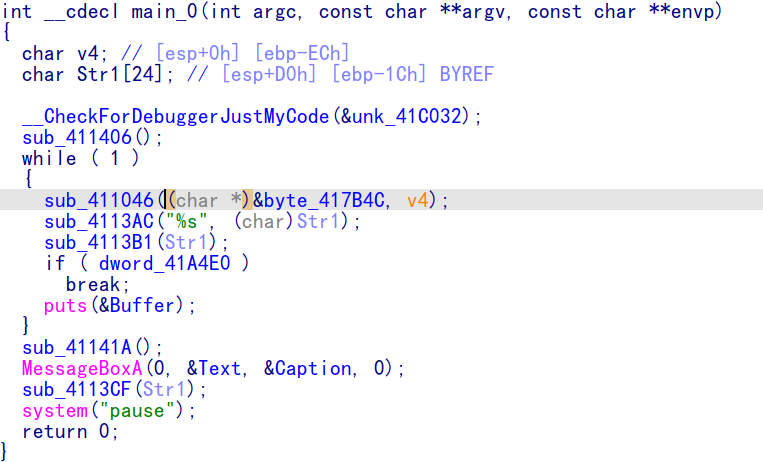
查看
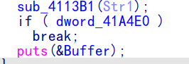
sub_4113b1 函数，
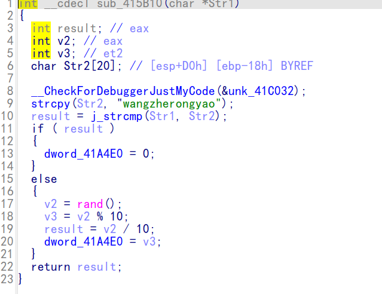
如果 str1 与 str2 相同，则 result 不为 0，反之为 0，根据 main 函数推测 result 不能为 0，可知 str2 应为 "wangzherongyao"
重新执行程序，输入正确的 key 之后显示
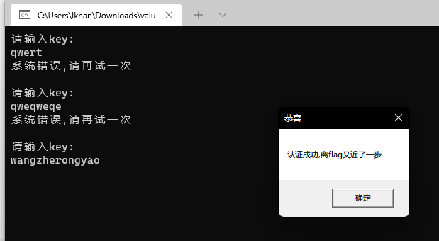
之后继续查看之后的函数
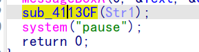
进入之后分析
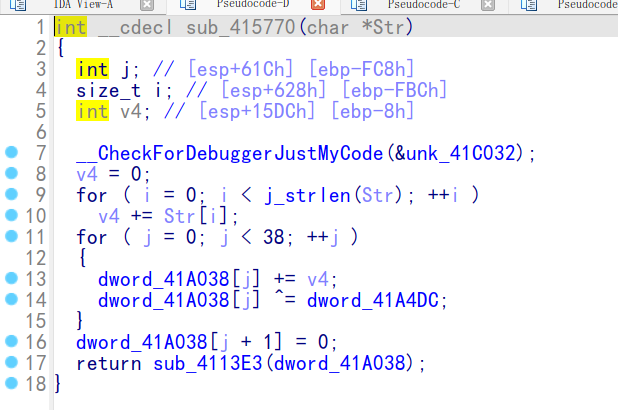
简单的加密函数，本来以为写脚本就能解决，但是这里的 dword_41A4DC 数组的值未知，猜测应该是在程序运行期间初始化，所以进入 ollydbg 动态调试
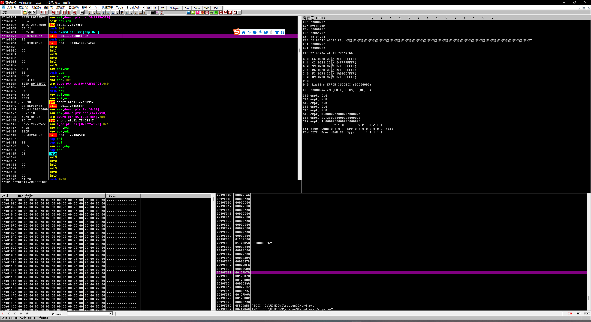
直接 ctrl+F8 , 到达输入时输入 “wangzherongyao" 没想到 flag 直接弹出来了
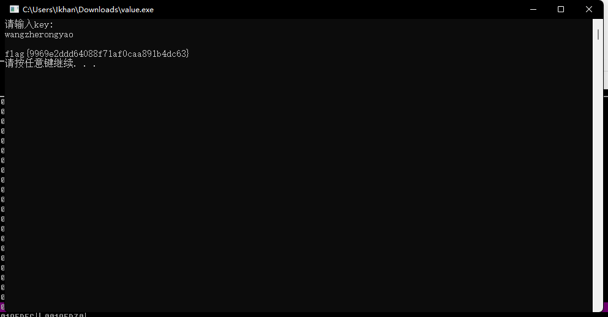
所以
flag{9969e2ddd64088f71af0caa891b4dc63}
# BBBigEqSet
拿到文件之后直接在 wsl 里面打开，然后
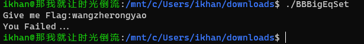
用 exeinfo 看完是 64 位之后直接拉进 IDA 。
查看 main 函数时提示函数占用太大，无法反编译，于是按照网上教程修改了 IDA 配置
进入 IDA\cfg\ida.cfg
修改 MAX_FUNCSIZE = 1024
成功反编译后发现是很长的解方程的题目，因为之前没有做个类似的题目，但是知道 numpy 模块可以直接解方程，所以直接写 IDA pro 脚本
# coding=utf-8 | |
import numpy | |
instr=0x11c7 #起始指令的地址 | |
end_addr=0x4963c #指令结束的地址 | |
numpy_out="" #方便写脚本，让 ida 直接输出 numpy 的矩阵数组 | |
flag=[] #flag 数组用于存放方程未知数的系数 | |
cmps=[] #cmps 数组存放方程右侧的常数 | |
while(instr<=end_addr): | |
dis_asm = idc.GetMnem(instr) | |
if(dis_asm=="imul"): | |
if(idc.GetOpType(instr,1)==5):#如果第二个 OPCODE 是立即数，主要为了区分 imul edx, eax, 9421h 和 imul eax, 60CDh 两种格式 | |
flag.append(idc.GetOperandValue(instr,1)) | |
else: | |
flag.append(idc.GetOperandValue(instr,2)) | |
if(dis_asm=="cmp"): | |
cmps.append(idc.GetOperandValue(instr,1)) | |
ctr=0 | |
numpy_out+="[" | |
for i in flag: | |
numpy_out+=str(i) | |
ctr=ctr+1 | |
if(ctr==128):#因为 flag 一共 128 位，这时我们的矩阵结束，添加 "]" 符号 | |
numpy_out+="]," | |
break | |
numpy_out+="," | |
flag=[] | |
instr=idc.NextHead(instr) | |
#print numpy_out 这句用来输出方程的所有组系数 | |
numpy_out="" | |
for i in cmps: | |
numpy_out+=(str(i)+",") | |
print numpy_out #输出方程右侧的常数 |
上面的脚本只能将求解的矩阵当做字符串打印出来，但是因为我线性代数学得不好再加上对 numpy 用的不是很熟悉，所以只能将 "矩阵" 字符串打印出来然后手动的更改格式为矩阵
解题的脚本如下
# coding=utf-8 | |
import numpy | |
x = numpy.linalg.solve(c,d) | |
print(x) | |
#这里的 c d 都是上一步得到的矩阵打印出来的 x 也是矩阵格式，所以之后还得继续更改格式 |
a = "[102. 108. 97. 103. 123. 83. 111. 111. 111. 111. 48. 48. 48. 95. 76. 111. 111. 79. 79. 79. 79. 79. 79. 79. 79. 103. 103. 79. 57. 57. 103. 57. 57. 95. 115. 49. 109. 117. 76. 116. 97. 78.101. 79. 117. 115. 95. 69. 69. 69. 81. 117. 97. 116. 49. 48.110. 53. 95. 89. 48. 85. 85. 85. 85. 85. 85. 117. 117. 117.95. 99. 65. 65. 52. 52. 65. 65. 78. 78. 110. 110. 78. 95.83. 79. 79. 79. 79. 79. 79. 76. 86. 69. 95. 73. 84. 49.55. 84. 84. 49. 49. 55. 55. 49. 73. 84. 73. 84. 33. 33.33. 95. 56. 83. 104. 111. 116. 68. 115. 104. 80. 57. 48. 97.98. 125.]" | |
a = a.replace(' ','') | |
a = a.replace('.',',') | |
d =[102,108,97,103,123,83,111,111,111,111,48,48,48,95,76,111,111,79,79,79,79,79,79,79,79,103,103,79,57,57,103,57,57,95,115,49,109,117,76,116,97,78,101,79,117,115,95,69,69,69,81,117,97,116,49,48,110,53,95,89,48,85,85,85,85,85,85,117,117,117,95,99,65,65,52,52,65,65,78,78,110,110,78,95,83,79,79,79,79,79,79,76,86,69,95,73,84,49,55,84,84,49,49,55,55,49,73,84,73,84,33,33,33,95,56,83,104,111,116,68,115,104,80,57,48,97,98,125,] | |
for i in d: | |
print(chr(i),end='') | |
''' | |
flag{Soooo000_LooOOOOOOOOggO99g99_s1muLtaNeOus_EEEQuat10n5_Y0UUUUUUuuu_cAA44AANNnnN_SOOOOOOLVE_IT17TT11771ITIT!!!_8ShotDshP90ab} | |
''' |
总结一下，还是对 python 不太熟悉，基本的格式转换还有 numpy 模块的使用太生疏了
还有一点就是后面得多学点 IDC 的内容，因为 IDA 里面写 python 脚本必须得用到这玩意儿
flag{Soooo000_LooOOOOOOOOggO99g99_s1muLtaNeOus_EEEQuat10n5_Y0UUUUUUuuu_cAA44AANNnnN_SOOOOOOLVE_IT17TT11771ITIT!!!_8ShotDshP90ab}
# tiny
下载之后 wsl 里面运行，显示段错误，而且文件本身也只有 90 几个字节，算是特别特别小的 elf 文件
32 位，直接在 IDA 里面打开看汇编
竟然可以反汇编，不由得感叹 IDA 的强大
IDA 反汇编的 C 代码如下
void __noreturn start() | |
{ | |
int v0; // ecx | |
int v1; // eax | |
int v2; // [esp-4h] [ebp-4h] | |
v0 = 2; | |
v1 = 0; | |
do | |
v1 |= __ROR4__(*(_DWORD *)(v2 + 4 * v0-- - 4), 3) ^ 0xCE60E4A; | |
while ( v0 ); | |
__asm { int 80h; LINUX - sys_exit } | |
} |
ROR（循环右移）指令把所有位都向右移，最低位复制到进位标志位和最高位。该指令格式与 SHL 指令相同
所以其他的就很清楚，程序接收参数 (flag), 先取出后四位循环右移 3 位，然后再相应的做异或运算，接着循环到取出前四位继续运算
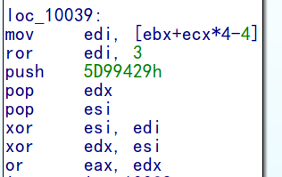
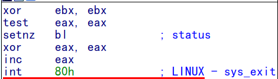
eax 是整个函数的返回值，由
test eax,eax
sernz bl ;这里就能判断eax为1
所以上面的
or eax,edx ; 所以为了使eax=1，这里的edx只能为0
所以倒推异或，就能够理清程序思路
(edi>>3)^0x93F9A63==0x5D99429 #第一次循环，edi为flag的后四位
(edi>>3)^0x8AF45207==0X5D99429
之后就很简单的逆向计算就可以
def ROR(n,r): | |
n = n&0xffffffff | |
return ((n>>r) | (n<<(32-r)))&0xffffffff | |
def hex_2_str(x): | |
s = "" | |
while(x!=0): | |
s+=str(chr(int(x%0x100))) | |
x/=0x100 | |
return s | |
print (hex_2_str(ROR(( 0x8AF45207 ^ 0x5D99429),32-3))) | |
print (hex_2_str(ROR((0x93F9A63^0x5D99429),32-3))) | |
#ror (flag,x) 的逆算法是 ror (flag,32-x) |
得到 flag
flag{t1nyPr0g}
# 签到题
下载后打开，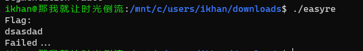
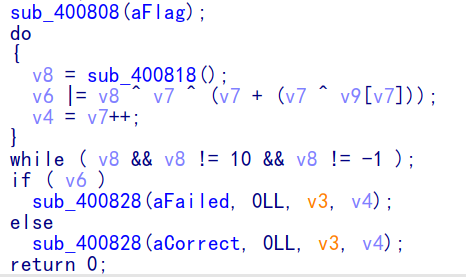
为了让 V6=0
则 v8=v7(v7+(v7v9[v7]))
然后直接写脚本
list = [102,109,99,98,127,58,85,106,57,82,122,55,81,19,51,35,67,70,41,61,41,32,127,28,38,77,49,20,80,94,-24] | |
l=len(list) | |
for i in range(l): | |
v8=i^(i+(i^list[i])) | |
print(chr(v8),end='') |
flag{A_s1mpLe&E4sy_RE_i5Nt_1t}